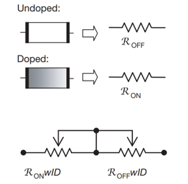

Memristors & Reconfigurable Analogue Filters
Abstract
My undergraduate thesis explored the application of memristors to reconfigurable analogue filters.
Memristors
Memristors are non-linear two terminal devices with variable resistance, initially theorised by L. Chua in 1971 [4]. The memristor supposedly closes the gap between the fundamental relationships among the circuit measurements (voltage, current, charge and flux) and completes the missing relationship between electric charge and magnetic flux linkage. Memristor technology is still in its infancy as the first practical implementations were only fabricated relatively recently in 2008. Various potential applications of memristors are being worked on including Resistive-RAM (ReRAM/RRAM), Neuro-memristive AI/memristive neural networks, digital logic gates, cross-bar arrays and others, however none have proven commercially viable yet. Memristors applied in the analogue sphere could pave the way for simpler variable resistor designs with continuous tuning.


Memristor Programming Schemes
Programming schemes:
Method 1
The first programming method explored was using a balanced H-bridge with PWM pulsing of alternate switch pairs.

Method 2
The second method exploits the function
Reconfigurable Analogue Filters
Reconfigurable Filters: